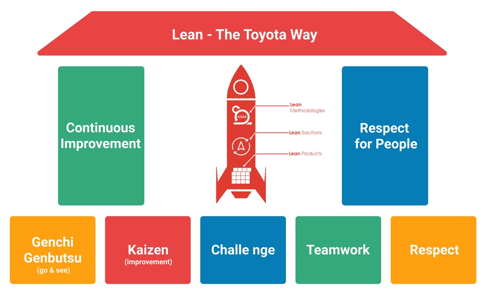

Managing science can be hard. Whether you are taking on the role of a PI to run a university lab, a group lead in pharma, or VP in a biotech startup, it can be hard to know where to start. How do we manage a group of scientists that empowers everyone to develop and achieve their goals? Answers to this and other managerial questions can come from many great places, and books can be an especially valuable resource to learn, prepare, and make an overall positive impact.
Management books can be hit and miss, but one worth reading is The Toyota Way by Jeffrey Liker (an updated second edition was published recently). The Toyota Way is a foundational management book that has established and fed into widely adopted management approaches including lean management. In this blog post we will review the Toyota Way of management and discuss how this can empower science.
The Toyota Way is a pretty dense book, but it can be broken down into four basic themes:
- A philosophy based on long term systems level thinking
- Struggling to flow value to each customer
- Respect, challenge, and grow people and partners toward a vision of excellence
- Approach problem solving by thinking and acting scientifically toward improvement
These four themes are broken up into fourteen essential management principles which are effectively outlined in Liker’s book (see titles here). Instead of going through those fourteen principles here (we can read the book for those details), we will review some of the points that are critical for the scientific disciplines.

Go See For Yourself
The first point we can take away from the Toyota Way is the importance of Genchi Genbutsu, which means going out and directly observing a place of work in order to facilitate understanding and more effective problem solving. A lot of us intuitively do this. An example is a PI doing their daily walk through their university lab, talking to the lab members, and directly learning about the work and required solutions. While many of us do this, there are just many examples of when we fall short.
A great example of falling short of scientific genchi genbutsu is at the interface of wet and dry labs. As computational scientists in a lab office, how often are we making the effort to visit our colleagues in the lab and learn about their work at the bench? As bench scientists, how often do we sit down with our computational colleagues to look through their code bases or computational infrastructure? By going to the place of work instead of hearing about it from someone else, we can gain critical insights and facilitate better problem solving. This is easy to forget, but critical for team science.
Apply Scientific Thinking
Another Toyota takeaway is establishing team processes in a scientific manner using standard processes. As scientists we are used to writing down our experiments in notebooks, making notes on the results, and improving with iterative improvements. We can apply this same approach to improving teams as well. For example, if our weekly meetings aren’t going well (perhaps they run long), we can write down (define) our current “meeting standards”, define the future state we want to achieve (shorten the meeting from three hours to one hour), and then define the “experiments” we want to run to achieve that result (e.g. try taking care of some material by email). Most of us cringe at the prospect of policy because it feels like a road to burdensome bureaucracy, but simply writing down the current states as if they were lab experiments can help focus team improvements.
Don’t Be A Hammer Looking For A Nail
A final key takeaway is to avoid the “hammer looking for a nail” problem. Liker frames this as using “pull” systems instead of “push” systems when evaluating needs. This means that we should be allowing downstream needs to dictate the needs we address. We can think of this in terms of models or technologies we develop in the lab.
It can be incredibly tempting for us to adopt or develop a technology because it’s scientifically very interesting, but it’s not actually relevant to our work. Once we have the technology (for example a new machine learning algorithm) we can find ourselves looking for problems to solve, often leading us to focus on contrived or unimportant problems instead of solving important and pressing problems. Instead of starting with a solution (like a technology) and “pushing” onto the problems, we should aim to start with a focus on the problem (like a scientific question) and then “pull” in what is needed to solve the problem.
Conclusions
Three key points we can take from the Toyota Way are to go see for ourselves (genchi genbutsu), to be scientific in improving our teams, and to focus on solving problems without being a hammer looking for a nail. There is even more to unpack in this book (I highly recommend picking it up from the local library) but we can summarize it as adopting a mindset around intentionally growing and improving (continuous improvement). And importantly we need to realize that the Toyota Way is not a simple solution we can implement and then forget about. It’s a mindset and a culture whose benefit really shows after long-term implementation.
comments powered by Disqus